1072B50 AIR CHAMBER - R.R.
- Path
- Procedures > 10 ENGINE > 1072 INLET AND EXHAUST MANIFOLDS > 1072B INLET MANIFOLDS > 1072B50 AIR CHAMBER - R.R.
- Kind
- repair procedure (removal / refitting; the operation number is the code)
- Applies to
- engines: 2.2; all production periods
- Interactive page
- https://sloeber94.github.io/elrnDB-fCrm/en/#/194000352
Applies to: engines: 2.2; all production periods
 Removing
Removing
 Refitting
Refitting- Position the vehicle on a lift.
- Make sure that the ignition key is in the OFF position, then disconnect the battery terminal (-).
Description | Connector | |
|---|---|---|
- | Battery |
1. Remove the sound insulation cover fastened to the engine by three pins.
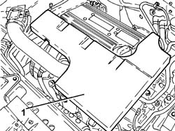
Applies to: engines: 2.2; all production periods
1. Loosen the band and disconnect the engine oil vapour recovery pipe from the cylinder head cover.
2. Loosen the bands and remove the air supply hose from the air flow meter to the throttle casing.
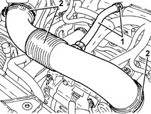
Applies to: engines: 2.2; all production periods
1. Disconnect the electrical connections from the injection/ignition system control unit.
Description | Connector | |
|---|---|---|
1 | Engine management control unit |
2. Undo the bolts (2a) and remove the injection/ignition system control unit (2b).
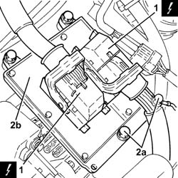
Applies to: engines: 2.2; all production periods
1. Disconnect the engine coupling.
Description | Connector | |
|---|---|---|
1 | Engine cables/engine services cable coupling |
2. Disconnect the electrical connection from the throttle casing with D.V.L.
Description | Connector | |
|---|---|---|
2 | Integrated throttle casing actuator |
3. Loosen the nut fixing the electric wiring mounting bracket.
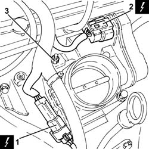
Applies to: engines: 2.2; all production periods
1. Undo the bolts (1a) and remove the throttle casing with D.V.L. (1b).
- Remove the air chamber gasket.
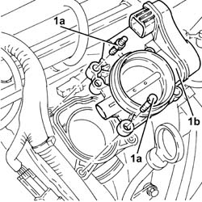
Applies to: engines: 2.2; all production periods
1. Disconnect the electrical connection from the air pressure sensor.
Description | Connector | |
|---|---|---|
1 | Absolute pressure sensor |
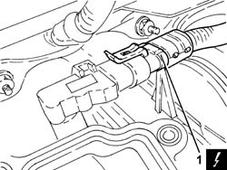
Applies to: engines: 2.2; all production periods
1. Undo the bolt (1a) and remove the engine oil dipstick tube (1b) assembly after having released it from the electrical wiring.
2. Undo the bolt fixing the electrical wiring mounting bracket to the air chamber.
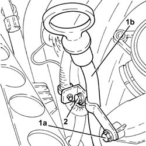
Applies to: engines: 2.2; all production periods
1. Disconnect the quick-release fitting for the fuel vapour recovery pipe, air chamber side.
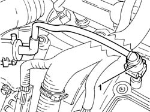
Applies to: engines: 2.2; all production periods
1. Disconnect the quick-release fitting for the brake servo vacuum intake pipe, air chamber side.
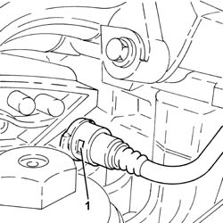
Applies to: engines: 2.2; all production periods
1. Undo the bolts (1a) and the nuts (1b) and remove the air chamber (1c).
- Remove the seals.
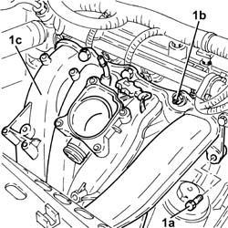
Applies to: engines: 2.2; all production periods
Refitting
Removing- Clean the contact surfaces
- Place the new gaskets in their housings on the air chamber.
1. Position the air chamber (1a) in its housing and secure it tightening the nuts (1b) and the bolts (1c) to the recommended torque.
Component | Fastening | dia | Value (daNm) | Validity |
|---|---|---|---|---|
Air chamber | Nut | M6 x 1 | (cylinder head side) 0.9 | 2.2 |
Component | Fastening | dia | Value (daNm) | Validity |
|---|---|---|---|---|
Air chamber | Bolt | M6 x 1 | (cylinder head side) 0.9 | 2.2 |
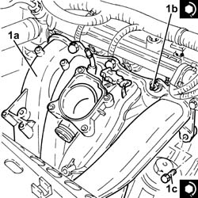
Applies to: engines: 2.2; all production periods
- Connect the quick-release fitting for the brake servo vacuum intake pipe, air chamber side.
- Connect the quick-release fitting for the fuel vapour recovery pipe, air chamber side.
- Tighten the bolt fixing the electrical wiring mounting bracket to the air chamber.
- Place the engine oil dipstick pipe back in its housing and fasten it with the bolt.
- Fasten the electrical wiring to the engine oil dipstick pipe.
- Connect the electrical connection to the air pressure sensor.
1. Place the throttle casing integrated with D.V.L. (1a), complete with gasket, back in its housing and secure it tightening the bolts (1b) to the recommended torque.
Component | Fastening | dia | Value (daNm) | Validity |
|---|---|---|---|---|
Throttle body built into DVL | Bolt | M6 x 1 | (air chamber side) 0.9 | 2.2 |
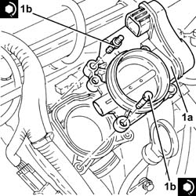
Applies to: engines: 2.2; all production periods
- Tighten the nut fixing the electric wiring mounting bracket.
- Connect the electrical connection to the throttle casing with D.V.L.
- Connect the engine coupling.
1. Place the injection/ignition system control unit (1a) in its housing and secure it tightening the bolts (1b) to the recommended torque.
Component | Fastening | dia | Value (daNm) | Validity |
|---|---|---|---|---|
Injection/ignition system control unit | Bolt | M6 x 1 | (air chamber side) 0.9 | 2.2 |
2. Connect the electrical connections to the injection/ignition system control unit.
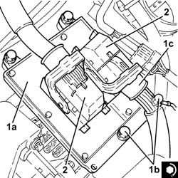
Applies to: engines: 2.2; all production periods
- Place the air supply hose from the air flow meter to the throttle casing back in its housing and secure it using the bands.
- Connect the engine oil vapour recovery pipe to the cylinder head cover and secure it using the band.
- Place the sound insulation cover back in its housing and secure it to the engine using the three pins.
- Connect the negative battery terminal.
- Remove the vehicle from the lift.